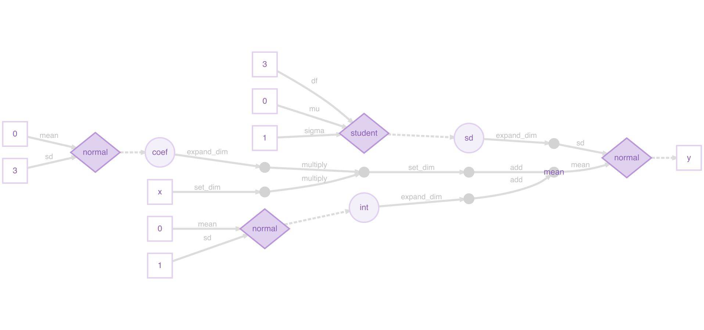
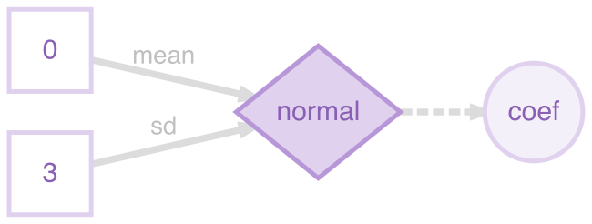
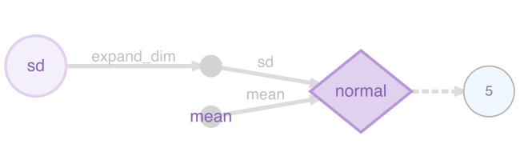
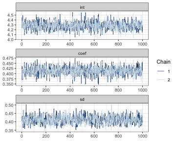
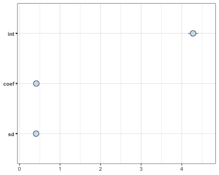

Installation
You can install the stable version of greta from CRAN:
install.packages("greta")Or install the development version of greta from r-universe:
install.packages("greta", repos = c("https://greta-dev.r-universe.dev", "https://cloud.r-project.org"))(Note - installing from r-universe is just like installing from CRAN, and should be faster and more convenient than installing from GitHub)
You can also install the development version of greta
via GitHub:
devtools::install_github("greta-dev/greta")then load the package
Installing TensorFlow
Under the hood, greta uses Google’s TensorFlow and tensorflow-probability
python packages. You usually don’t need to install anything yourself:
the first time you use greta in a session, it automatically
installs a compatible Python, TensorFlow, and TensorFlow Probability via
uv. For most users
library(greta) followed by your first model just works.
If you need a conda environment instead (for example, offline), or
want to pin specific versions, see the “Installing dependencies”
vignette and install_greta_deps().
DiagrammeR
greta’s plotting functionality depends on the DiagrammeR package. Because DiagrammeR depends on the igraph package, which contains a large amount of code that needs to be compiled, DiagrammeR often takes a long time to install. So, DiagrammeR isn’t installed automatically with greta. If you want to plot greta models, you can install igraph and DiagrammeR from CRAN.
install.packages("igraph")
install.packages("DiagrammeR")igraph can be difficult to install on some machines, due to dependencies on the XML R package and libxml2 and gfortran software libraries. There are workarounds to these issues (e.g. here and here) but if you can’t get it to work, you can still use greta for everything except plotting models.
How greta works
greta lets us build statistical models interactively in R, and then sample from them by MCMC. We build greta models with greta array objects, which behave much like R’s array, matrix and vector objects for numeric data. Like those numeric data objects, greta arrays can be manipulated with functions and mathematical operators to create new greta arrays.
The key difference between greta arrays and numeric data objects is that when you do something to a greta array, greta doesn’t calculate the values of the new greta array. Instead, it just remembers what operation to do, and works out the size and shape of the result.
For example, we can create a greta array z representing
some data (a 3x3 matrix of 1s):
(z <- ones(3, 3))greta array <data> [,1] [,2] [,3]
[1,] 1 1 1
[2,] 1 1 1
[3,] 1 1 1we can then create a new greta array z2 by doing
something to z:
(z2 <- z + z ^ 2)greta array <operation> [,1] [,2] [,3]
[1,] ? ? ?
[2,] ? ? ?
[3,] ? ? ? greta knows the result must also be a 3x3 matrix, but it doesn’t try
to calculate the results. Instead it treats the new greta array
z2 like a placeholder, for which it will calculate the
results later.
Because greta only creates placeholders when we’re building
our model, we can construct models using greta arrays that represent
unknown variables. For example, if we create a new greta array
a representing some unknown values, we can still manipulate
it as though it were data:
greta array <variable> [,1] [,2] [,3]
[1,] ? ? ?
[2,] ? ? ?
[3,] ? ? ?
(a2 <- a + a ^ 2)greta array <operation> [,1] [,2] [,3]
[1,] ? ? ?
[2,] ? ? ?
[3,] ? ? ? This allows us to create a wide range of models, like in the general-purpose modelling languages like BUGS and Stan. But unlike those languages we build greta models interactively in R so get feedback immediately if there’s a mistake like a misspelled variable name or if one of our greta arrays has the wrong shape.
greta also lets us declare that a greta array follows a probability distribution, allowing us to train models using observed data, and to define prior distributions over our parameters, for Bayesian analyses.
The rest of this vignette walks through an example of fitting a model using greta. If you’d like to see examples of some common models fitted in greta and with equivalent BUGS and Stan code, take a look at Example models. If you’d like more technical details about how greta works under the hood, check out Technical details.
Building a model
The rest of the vignette explains step-by-step how to build,
visualise and fit a model with greta. We’ll be stepping through a model
for linear regression between two of the variables in the iris
dataset, which is included with base R. The model is Bayesian
(we specify priors over the variables), though it is also possible to do
frequentist (no priors) inference in greta, using
variable() instead of a probability distribution to create
random variables.
Here’s the whole script to specify and fit the model:
library(greta)
# data
x <- as_data(iris$Petal.Length)
y <- as_data(iris$Sepal.Length)
# variables and priors
int <- normal(0, 1)
coef <- normal(0, 3)
sd <- student(3, 0, 1, truncation = c(0, Inf))
# operations
mean <- int + coef * x
# likelihood
distribution(y) <- normal(mean, sd)
# defining the model
m <- model(int, coef, sd)
# plotting
plot(m)
# sampling
draws <- mcmc(m, n_samples = 1000)Data
The first section of the script takes the iris data (which is automatically loaded) and converts the two columns we care about into greta arrays:
The greta function as_data() converts other R objects
into greta arrays. In this case it’s converting numeric vectors (the two
columns of the iris dataframe) into greta arrays. as_data()
can also convert matrices and R arrays with numeric, integer or logical
(TRUE or FALSE) values into greta arrays. It
can also convert dataframes to greta arrays, so long as all elements are
either numeric, integer or logical.
E.g. we can convert the first 5 rows and 4 columns of the iris dataframe, and print the result:
as_data(iris[1:5, 1:4])greta array <data> [,1] [,2] [,3] [,4]
[1,] 5.1 3.5 1.4 0.2
[2,] 4.9 3.0 1.4 0.2
[ reached 'max' / getOption("max.print") -- omitted 3 rows ]ℹ 10 more values
Use `print(n = ...)` to see more valuesWhenever as_data() converts logical values to greta
arrays, it converts them to 1s (for TRUE) and 0s (for
FALSE). E.g. if we first convert the last column of
iris from a factor into a logical vector, we can see
this:
(is_setosa <- iris$Species[c(1, 41, 81, 121)] == "setosa")[1] TRUE TRUE FALSE FALSE
as_data(is_setosa)greta array <data> [,1]
[1,] 1
[2,] 1
[3,] 0
[4,] 0You can also see from this example that greta arrays always consider a vector as either a column vector (the default) or a row vector, and greta arrays always have at least two dimensions:
[1] 4 1explicit vs. automatic conversion
For many models, we don’t have to explicitly convert data to
greta arrays, the R objects will be converted automatically when we do
an operation on them. That’s handy for when we
want to use constants in our model because it saves us manually
converting numbers each time. However, it’s good practice to explicitly
convert your data to a greta array using as_data(). This
has two advantages: it lets greta work out the names of your data greta
arrays (e.g. x and y in our example) which it
can use when plotting the model; and
as_data() will check your data for missing
(NA) or non-finite (Inf or -Inf)
values, which will break the model.
data structures
greta also provides some convenience functions to generate fixed
numeric values. ones() and zeros() create
greta arrays filled with either 1 or zero, and with the specified
dimensions:
ones(1, 3)greta array <data> [,1] [,2] [,3]
[1,] 1 1 1
zeros(2, 2)greta array <data> [,1] [,2]
[1,] 0 0
[2,] 0 0The greta_array() function generalises this to let you
create greta arrays with any values, in the same way as R’s
array() function:
greta_array(pi, dim = c(2, 2))greta array <data> [,1] [,2]
[1,] 3.141593 3.141593
[2,] 3.141593 3.141593
greta_array(0:1, dim = c(3, 3))greta array <data> [,1] [,2] [,3]
[1,] 0 1 0
[2,] 1 0 1
[3,] 0 1 0greta_array() is just a thin wrapper around
array(), provided for convenience. A command like
greta_array(<some arguments>) has exactly the same
effect as: as_data(array<some arguments>).
Variables and priors
The second section of the script creates three greta arrays to represent the parameters in our model:
Each of these is a variable greta array, and each is assumed a priori (before fitting to data) to follow a different probability distribution. In other words, these are prior distributions over variables, which we need to specify to make this a full Bayesian analysis. Before going through how to specify variables with probability distributions, it will be clearer to first demonstrate the alternative; variables without probability distributions.
variables without probability distributions
If we were carrying out a frequentist analysis of this model, we
could create variable greta arrays (values we want to learn) without
probability distributions using the variable() function.
E.g. in a frequentist version of the model we could create
int with:
(int <- variable())greta array <variable> [,1]
[1,] ? variable() has three arguments. The first two arguments
determine the constraints on this parameter; we left them at their
default setting of lower = -Inf, upper = Inf meaning the
variables can take any value on the real number line. The third argument
gives the dimensions of the greta array to return, in this case we left
it at its default value of 1x1 (a scalar).
We can create a variable constrained between two values by specifying
lower and upper. So we could have created the
positive variable sd (the standard deviation of the
likelihood) with:
(sd <- variable(lower = 0))greta array <variable> [,1]
[1,] ? If we had instead wanted a 2x3 array of positive variables we could have created it like this:
greta array <variable> [,1] [,2] [,3]
[1,] ? ? ?
[2,] ? ? ? variables with probability distributions
In our example script, when we created the variables
int, coef and sd, we
simultaneously stated the prior distributions for them using some of
greta’s probability distribution functions. You can see a list of the
currently available distributions in the ?greta::distributions
helpfile. Each of these distribution functions takes as arguments the
distribution’s parameters (either as numbers or other greta arrays), as
well as the dimensions of the resulting greta array. As before, we left
the dimensions arguments at their default value to create scalar greta
arrays.
Both int and coef were given zero-mean
normal distributions, which are a common choice of prior for
unconstrained variables in Bayesian analyses. For the strictly positive
parameter sd, we chose a slightly unconventional option, a
positive-truncated (non-standard) student’s t distribution, which we
create using greta’s built-in support for truncated distributions.
variables with truncated distributions
Some of greta’s probability distributions (those that are continuous
and univariate) can be specified as truncated distributions. By
modifying the truncation argument, we can state that the
resulting distribution should be truncated between the two truncation
bounds. So to create a standard normal distribution truncated between -1
and 1 we can do:
greta array <variable following a normal distribution> [,1]
[1,] ? greta will account for this truncation when calculating the density of this distribution; rescaling it to be a valid probability distribution. We can only truncate to within the support of the distribution; e.g. greta will throw an error if we try to truncate a lognormal distribution (which must be positive) to have a lower bound of -1.
Operations
The third section of the script uses mathematical operators to combine some of our parameters and data, to calculate the predicted sepal lengths, for a given parameter set:
mean <- int + coef * xBecause int and coef are both scalars, the
resulting greta array mean has the same dimensions as
x; a column vector with 150 elements:
dim(mean)[1] 150 1
head(mean)greta array <operation> [,1]
[1,] ?
[2,] ?
[3,] ?
[4,] ?
[5,] ?
[6,] ? greta arrays can be manipulated using R’s standard arithmetic,
logical and relational operators; including +,
* and many others. The ?greta::operators
help file lists the operators that are implemented for greta arrays. You
can also use a lot of common R functions for numeric data, such as
sum(), log() and others. the available
functions are listed in the ?greta::functions
helpfile. All of these mathematical manipulations of greta arrays
produce ‘operation’ greta arrays.
Extract and replace
We can use R’s extract and replace syntax (using [) on
greta arrays, just like with R’s vectors, matrices and arrays. E.g. to
extract elements from mean we can do:
mean[1:3]greta array <operation> [,1]
[1,] ?
[2,] ?
[3,] ? We can assign values from one greta array to another too. For example, if we wanted to create a matrix that has random normal variables in the first column, but zeros everywhere else, we could do:
greta array <operation> [,1] [,2] [,3]
[1,] ? 0 0
[2,] ? 0 0
[3,] ? 0 0
[4,] ? 0 0 ℹ 2 more values
Use `print(n = ...)` to see more valuesR’s subset operator [ has an argument drop,
which determines whether to reduce the number of dimensions of a array
or matrix when the object has zero elements in that dimension. By
default, drop = TRUE for R objects, so matrices are
automatically converted into vectors (which have dimension
NULL) if you take out a single column:
NULL
dim(z[, 1, drop = FALSE])[1] 2 1greta arrays must always have two dimensions, so greta always acts as
though drop = FALSE:
[1] 2 1Functions
We can write our own functions for greta arrays, using the existing operators and functions. For example, we could define the inverse hyperbolic tangent function for greta arrays like this:
greta array <operation> [,1] [,2]
[1,] ? ?
[2,] ? ? Likelihood
So far, we have created greta arrays representing the variables in
our model (with prior distributions) and created other greta arrays from
them and some fixed, independent data. To perform statistical
inference on this model, we also need to link it to some observed
dependent data. By comparing the sepal lengths predicted under
different parameter values with the observed sepal lengths, we can
estimate the most plausible values of those parameters. We do that by
defining a likelihood for the observed sepal length data
y.
By defining a likelihood over observed data, we are stating that
these observed data are actually a random sample from some probability
distribution, and we’re trying to work out the parameters of that
distribution. In greta we do that with the distribution()
assignment function:
distribution(y) <- normal(mean, sd)With the syntax
distribution(<lhs>) <- <rhs>, we are stating
that the data greta array on the left <lhs> has the
same distribution as the greta array on the right
<rhs>. In this case, we’re temporarily creating a
random variable with a normal distribution (with parameters determined
by the greta arrays mean and sd), but then
stating that values of that distribution have been observed
(y). In this case both <lhs>
(y) and <rhs> are column vectors with
the same dimensions, so each element in y has a normal
distribution with the corresponding parameters.
Defining the model
Now all of the greta arrays making up the model have been created, we
need to combine them and set up the model so that we can sample from it,
using model():
m <- model(int, coef, sd)model() returns a ‘greta model’ object, which combines
all of the greta arrays that make up the model. We can pass greta arrays
as arguments to model() to flag them as the parameters
we’re interested in. When sampling from the model with
mcmc() those will be the greta arrays for which samples
will be returned. Alternatively, we can run model() without
passing any greta arrays, in which case all of the greta arrays (except
for data greta arrays) in the working environment will be set as the
targets for sampling instead.
Plotting
greta provides a plot function for greta models to help you visualise and check the model before sampling from it.
plot(m)

The greta arrays in your workspace that are used in the model are all
represented as nodes (shapes) with names. These are either data
(squares; x and y), variables (large circles;
int, coef, sd) or the results of
operations (small circles; mean). The operations used to
create the operation greta arrays are printed on the arrows from the
arrays they were made from. There are also nodes for greta arrays that
were implicitly defined in our model. The data nodes (squares)
with numbers are the parameters used to define the prior distributions,
and there’s also an intermediate operation node (small circle), which
was the result of multiplying coef and x
(before adding int to create mean).
Here’s a legend for the plot (it’s in the ?greta::model
helpfile too):
The fourth type of node (diamonds) represents probability distributions. These have greta arrays as parameters (linked via solid lines), and have other greta arrays as values(linked via dashed lines). Distributions calculate the probability density of the values, given the parameters and their distribution type.
For example, a plot of just the prior distribution over
coef (defined as coef <- normal(0, 3))
shows the parameters as data leading into the normal distribution, and a
dashed arrow leading out to the distribution’s value, the variable
coef:

It’s the same for the model likelihood, but this time the
distribution’s parameters are a variable (sd) and the
result of an operation (mean), and the distribution’s value
is given by data (the observed sepal lengths y):

Sampling
When defining the model, greta combines all of the distributions together to define the joint density of the model, a measure of how ‘good’ (or how probable if we’re being Bayesian) are a particular candidate set of values for the variables in the model.
Now we have a greta model that will give us the joint density for a
candidate set of values, so we can use that to carry out inference on
the model. We do that using an Markov chain Monte Carlo (MCMC) algorithm
to sample values of the parameters we’re interested in, using the
mcmc() function:
draws <- mcmc(m, n_samples = 1000)Here we’re using 1000 steps of the static Hamiltonian Monte Carlo (HMC) algorithm on each of 4 separate chains, giving us 4000 samples. HMC uses the gradients of the joint density to efficiently explore the set of parameters. By default, greta also spends 1000 iterations on each chain ‘warming up’ (tuning the sampler parameters) and ‘burning in’ (moving to the area of highest probability) the sampler.
draws is a greta_mcmc_list object, which
inherits from the coda R package’s mcmc.list object. So we
can use functions from coda, or one of the many other MCMC software
packages that use this format, to plot and summarise the MCMC
samples.
summary(draws)
Iterations = 1:1000
Thinning interval = 1
Number of chains = 2
Sample size per chain = 1000
1. Empirical mean and standard deviation for each variable,
plus standard error of the mean:
Mean SD Naive SE Time-series SE
int 4.2814 0.07961 0.0017801 0.0021163
coef 0.4144 0.01934 0.0004324 0.0004993
sd 0.4108 0.02442 0.0005460 0.0006635
2. Quantiles for each variable:
2.5% 25% 50% 75% 97.5%
int 4.130 4.2277 4.2792 4.3361 4.4431
coef 0.376 0.4018 0.4146 0.4269 0.4527
sd 0.367 0.3933 0.4100 0.4270 0.4619The bayesplot package makes some nice plots of the MCMC chain and the parameter estimates
library (bayesplot)
# set theme to avoid issues with fonts
ggplot2::theme_set(ggplot2::theme_bw())
mcmc_trace(draws, facet_args = list(nrow = 3, ncol = 1))
mcmc_intervals(draws)

plot of chunk mcmcvis
If your model is taking a long time whilst in the sampling phase and
you want to take a look at the samples. You can stop the sampler
(e.g. using the stop button in RStudio) and then retrieve the samples
drawn so far, by using stashed_samples(). Note that this
won’t return anything if you stop the model during the warmup phase
(since those aren’t valid posterior samples) or if the sampler completed
successfully.
Tweaking the sampler
greta’s default sampler is (static) Hamiltonian Monte Carlo. The
sampler will automatically tune itself during the warmup phase, to make
it as efficient as possible. If the chain looks like it’s moving too
slowly, or if you are getting a lot of messages about proposals being
rejected, the first thing to try is increasing the length of the warmup
period from its default of 1000 iterations (via the warmup
argument). If you’re still getting a lot of rejected samples, it’s often
a good idea to manually set the initial values for the sampler (via the
initial_values argument). This is often the case when you
have lots of data; the more information there is, the more extreme the
log probability, and the higher the risk of numerical problems.
A downside of HMC is that it can’t be used to sample discrete
variables (e.g. integers), so we can’t specify a model with a discrete
distribution (e.g. Poisson or Binomial), unless it’s in the likelihood.
If we try to build such a model, greta will give us an error when we run
model(). Future versions of greta will implement a wider
range of MCMC samplers, including some for discrete variables.